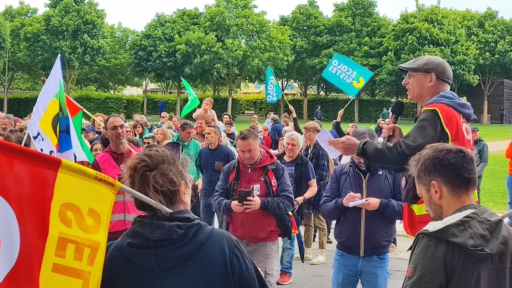
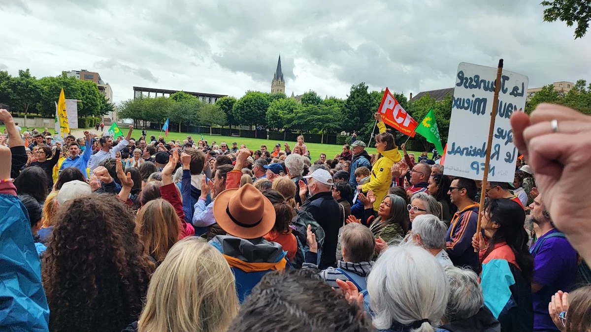
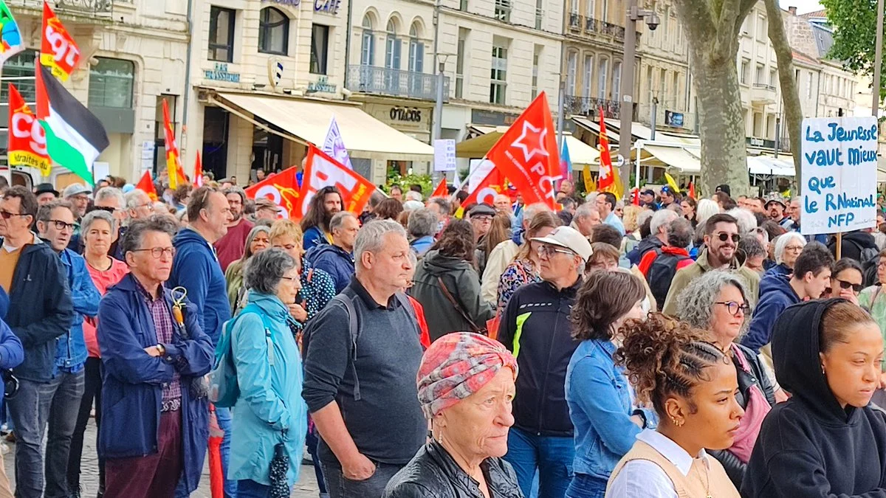
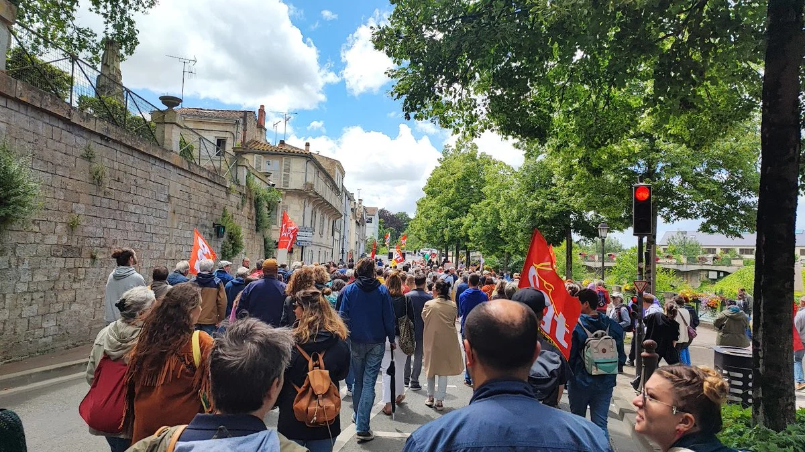

Publication sur X
15 juin 2024 à Niort. La mobilisation contre l’extrême droite en images
Date de publication sur X · 16 juin 2024
Repères éditoriaux
Nous avons relayé les images du rassemblement de Niort. Les annonces et comptes rendus de Bressuire et de Thouars documentent la même journée.
Texte de la publication sur X
Rassemblement du 15 juin à #Niort pour dire NON à l'extrême droite qui vote à l'Assemblée nationale contre les intérêts des salariés.
Les 30 juin et 7 juillet, votons pour le #NouveauFrontPopulaire pour défendre les valeurs de la République et réouvrir un chemin de progrès social https://t.co/4LE0WKpZ6V




Sources
PCF 79 · @79Parti sur X · AR-0005-TW-1802365429383405876
À lire aussi · « Cercle de silence 167 ». La vidéo du rassemblement
Publications associées
- Le 15 juin, plus de 1 500 manifestants selon le décompte du PCF 79 · Compte rendu Facebook des trois rassemblements
- 15 juin 2024 à Thouars. Rassemblement contre l’extrême droite · Autre rassemblement de la même journée
- 15 juin 2024 à Bressuire. Rassemblement contre l’extrême droite · Autre rassemblement de la même journée